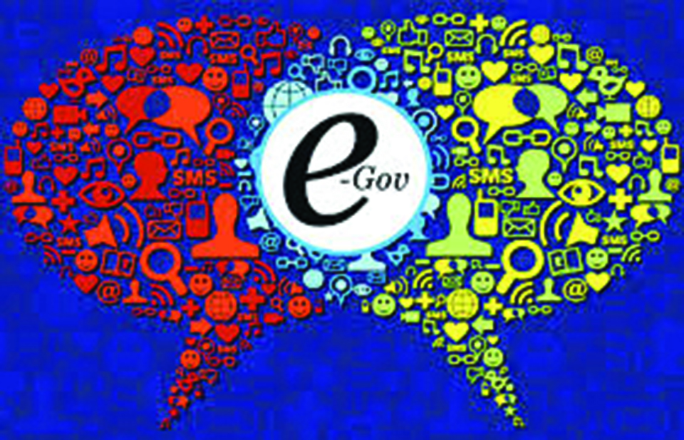
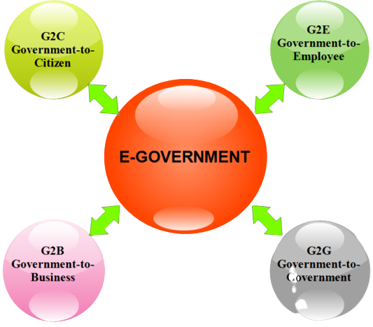

Empowering Citizens through Digital Services
Welcome to Our Project by Oxfordiean!
|  |
E-Governance, short for Electronic Governance, refers to the use of information and communication technologies (ICTs) to enhance and streamline government processes, improve service delivery, and foster citizen engagement. It involves the digitalization of government operations and services to make them more efficient, accessible, and transparent. |
1. Government-to-Citizen(G2C)The Government-to-citizen refers to the government services that are accessed by the familiar people. And Most of the government services fall under G2C. Likewise, the primary goal of Government-to-citizen is to provide facilities to the citizen. It helps the ordinary people to reduce the time and cost to conduct a transaction. A citizen can have access to the services anytime from anywhere. 2. Government-to-business (G2B)The Government to business is the exchange of services between Government and Business organizations. It is efficient for both government and business organizations. G2B provides access to relevant forms needed to comply. The G2B also consists of many services exchanged between business sectors and government. 3. Government-to-Government (G2G)The Government-to-Government refers to the interaction between different government department, organizations, and agencies. This increases the efficiency of government processes. In G2G, government agencies can share the same database using online communication. The government departments can work together. This service can increase international diplomacy and relations. 4. Government-to-Employee (G2E)The Government-to-Employee is the internal part of G2G sector. Furthermore, G2E aims to bring employees together and improvise knowledge sharing. |
 |